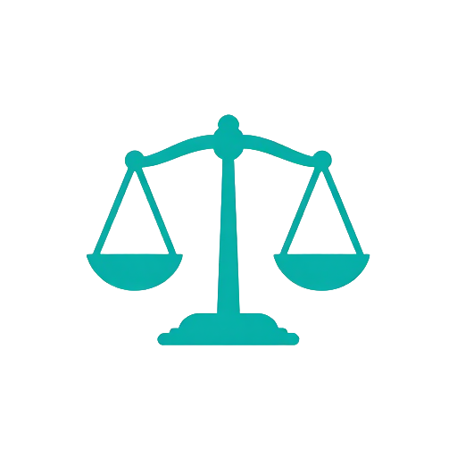
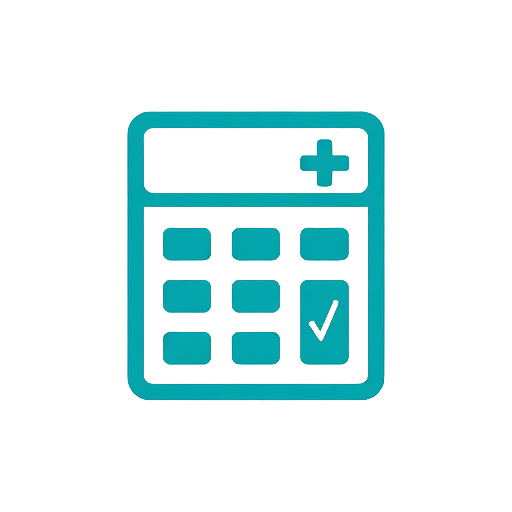
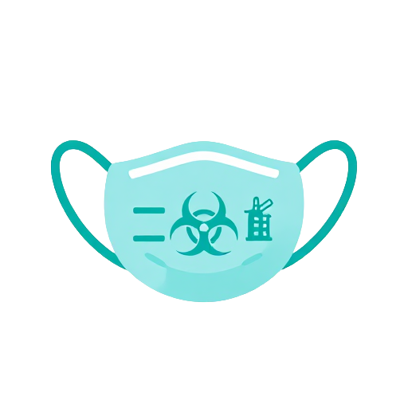
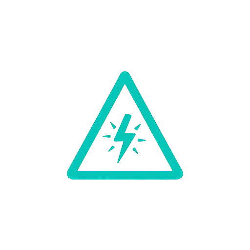
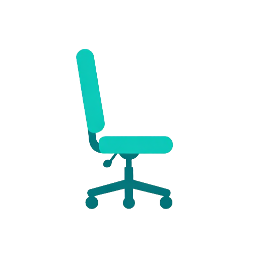
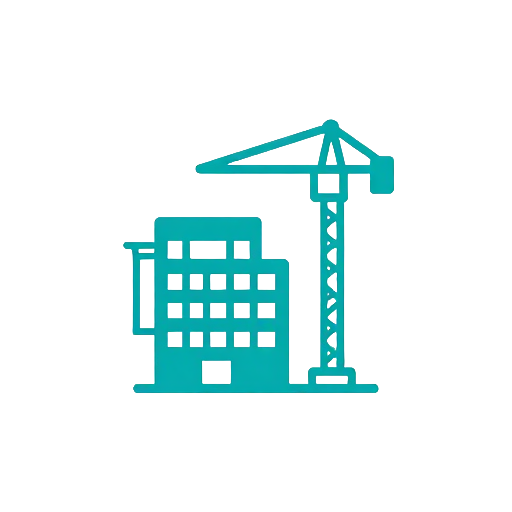
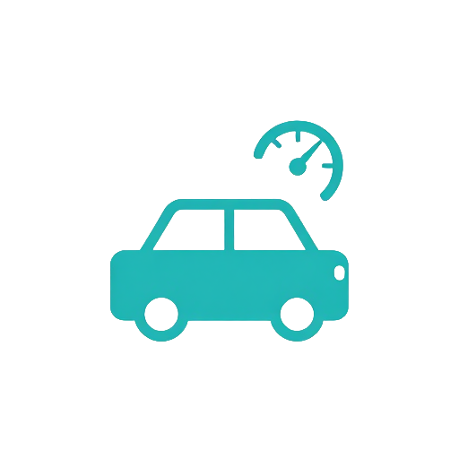
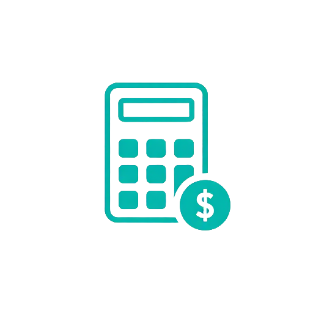

O Perito é o profissional de sua confiança.
TRADUZINDO CIÊNCIA EM PROVA
Excelência técnica. Imparcialidade. Verdades que constroem justiça.
NACIONAL
MULTIDISCIPLINAR
DE EXPERIÊNCIA
Ambiental
Práticas sustentáveis e processos digitais que reduzem impactos ambientais.
Governança
Ética, imparcialidade, conformidade normativa e rigor metodológico em cada trabalho.
Social
Compromisso com a verdade científica, a segurança laboral e a promoção da justiça.
Perícias Forenses
Há uma década traduzindo ciência em prova com rigor metodológico, isenção e responsabilidade. Nossa estrutura multidisciplinar reúne especialistas em Medicina Legal, Contabilidade, Engenharia da Computação e demais engenharias para atender demandas judiciais, arbitrais e extrajudiciais em todo o país.
Veja o CurriculumTipos de Perícias
Atuação abrangente como perito judicial, assistente técnico das partes e consultor em procedimentos extrajudiciais

1. Perícias Judiciais
Exames periciais em processos judiciais, pareceres e assistência técnica em demandas legais.
2. Perícias Médicas
Avaliação médica, valoração do dano corporal, aptidão laboral, nexo causal e incapacidade.

3. Auditoria de Contas Médicas
Conferência de faturas hospitalares, procedimentos e glosas, com verificação de conformidade e economicidade.

4. Perícias de Insalubridade
Avaliação das condições de trabalho, com identificação e quantificação de agentes nocivos.

5. Perícias de Periculosidade
Exame de atividades e operações perigosas, conforme NR-16 e legislação aplicável.

6. Perícias de Ergonomia
Avaliação das condições de trabalho, adequação de postos e fatores de risco ergonômicos.

7. Perícias de Engenharia Estrutural e Imobiliária
Vistorias em edificações, estruturas, patologias construtivas e avaliações de imóveis.

8. Perícias Automobilísticas
Reconstrução de acidentes, análise de dinâmica e avaliação de danos materiais.

9. Perícia e Consultoria Contábil
Balanços, valuation, apuração de haveres, cálculos financeiros, trabalhistas e consultoria preventiva.
10. Computação e Evidências Digitais
Forense digital, dispositivos, sistemas embarcados de tempo real, redes e sistemas críticos.
11. Perícias Grafotécnicas
Análise de assinaturas, autenticidade de documentos e detecção de fraudes.
12. Perícias em Áudio, Imagem e Vídeo
Autenticação de gravações, metadados, verificação de cortes e indícios de manipulação.
Conte conosco para avaliações precisas.
Atendemos escritórios de advocacia, departamentos jurídicos e empresas em todo o território nacional, fornecendo laudos periciais, pareceres e assistência técnica com agilidade e fundamentação científica.